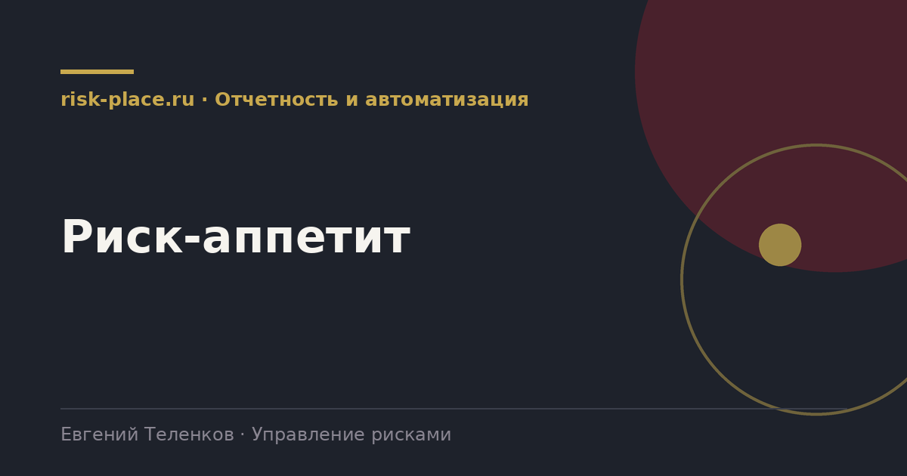

risk-
risk-Выбрать направления
- Четыре-шесть направлений, где границы очевидны и важны. Безопасность людей, ликвидность, соблюдение обязательных требований, непрерывность поставок ключевым клиентам, репутация, экология
Главная · Библиотека · Отчетность и автоматизация · Риск-аппетит
Библиотека · Отчетность и автоматизация
Аппетит это заявление собственника о том, чем компания готова рисковать ради результата. Без него реестр не с чем сравнивать.

Реестр отвечает на вопрос, какие риски есть и насколько они велики. Он не отвечает на вопрос, приемлемо это или нет. Без ответа на второй вопрос управление сводится к наблюдению, потому что нет критерия, требующего действия.
Аппетит вводит этот критерий. Как только он задан, у каждого существенного риска появляется однозначный статус, в пределах или за пределами. Второе требует решения уполномоченного органа, и именно это превращает реестр в управленческий инструмент.
Реально выполняется за одну-две сессии с правлением и утверждение советом.
Обезличенный образец для промышленной компании.
| Направление | Качественная формулировка | Измеримая граница |
|---|---|---|
| Безопасность людей | Компания не принимает риски, ведущие к тяжелым последствиям для жизни и здоровья | Ни одной работы с недопустимым уровнем профессионального риска |
| Ликвидность | Компания сохраняет способность исполнять обязательства при неблагоприятном сценарии квартала | Запас ликвидности не менее 45 дней покрытия обязательств |
| Обязательные требования | Компания не принимает риски умышленного несоблюдения обязательных требований | Ноль подтвержденных умышленных нарушений |
| Непрерывность поставок | Компания не допускает срыва отгрузок ключевым клиентам более чем на согласованный срок | Недоступность критичной позиции не более 10 суток |
| Инвестиции | Компания принимает риск недостижения показателей отдельного проекта в пределах утвержденного резерва | Совокупное превышение бюджета портфеля не более 10 процентов |
Частые вопросы
Одна форма для любого вопроса
Расскажем о ближайших датах, предложим формат под ваш состав участников и назовем порядок бюджета.
Предпочитаете почту — напишите на info@risk-place.ru. Адрес: Москва, улица Скаковая, 32с2.